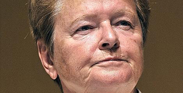

«Le climat est l’affaire de tous»Par Propos recueillis par Etienne Dubuis mercredi 2 septembre 2009 Le réchauffement suscite une mobilisation rare. Interview |
|
|  |
La mobilisation actuelle contre le réchauffement climatique lui doit beaucoup. En publiant en 1987 son fameux rapport sur l’état de la planète «Notre Avenir à Tous», l’ex-première ministre norvégienne Gro Harlem Brundtland a réussi le tour de force de sortir le sujet des cénacles scientifiques pour l’imposer sur la scène politique internationale. De passage à Genève à l’occasion de la troisième Conférence mondiale sur le climat, elle appelle la communauté internationale à redoubler d’efforts. Le Temps: Les vingt-deux ans passés depuis la publication de votre rapport ont-ils été bien utilisés? Gro Harlem Brundtland: Notre initiative a eu de larges effets, surtout si on la compare à d’autres processus de changement. Cinq ans après le rapport, la Conférence de Rio a adopté un premier texte fondamental, la Convention-cadre des Nations unies sur les changements climatiques. Et cinq ans plus tard, la plupart des pays riches se sont mis d’accord pour signer le Protocole de Kyoto, qui les engageait à produire des efforts substantiels. Mais le temps presse. Il est urgent d’aller plus avant dans cette voie. – Il existe de nombreux problèmes graves dans le monde. La communauté internationale doit-elle considérer le changement climatique comme une priorité?– Je vous accorde que le réchauffement climatique n’est pas le seul gros problème de notre temps. Mais il a ceci de particulier qu’il représente plus que d’autres une menace globale et qu’il exige plus que d’autres la collaboration de tous. – Pensez-vous que le progrès technique suffira à résorber le réchauffement? Ou notre mode de vie est-il aussi en jeu?– De nombreuses solutions techniques seront apportées au problème. Mais nous devons nous attendre aussi à changer certaines de nos habitudes. Ceci dit, il ne faut pas prendre cette perspective négativement. Modifier nos modes de vie ne signifie pas forcément accomplir des sacrifices. Nous allons ailleurs mais pas vers le pire. Les émissions de gaz à effet de serre ne sont pas des gages de prospérité. Pas plus que les pollutions dont souffrent de nombreuses villes dans le monde. Londres ne s’est pas sacrifiée en s’en débarrassant. – Quel objectif essentiel devra atteindre la conférence de Copenhague en décembre?– Il est temps aujourd’hui de passer d’un accord, le Protocole de Kyoto, liant un certain nombre d’Etats, à un autre les réunissant tous. Certes, les pays riches devront s’engager à prendre des mesures spécifiques en matière de financement et de transferts technologiques. Mais les pays en développement devront prendre leur part de l’effort. Nous voulons un deal global. Nous sommes tous engagés. |